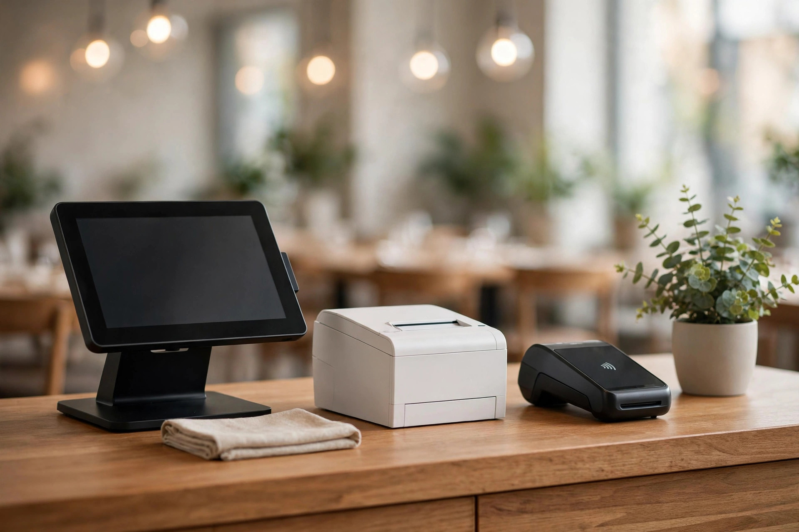

Restaurant Software Stack Costs: POS, Scheduling & Accounting Priced Together
Published

Restaurant software pricing pages are priced one tool at a time — the POS page never mentions the scheduling app or the accounting subscription. But nobody runs a restaurant on a POS alone. This guide prices the three-line stack every restaurant actually buys — point of sale, staff scheduling, and accounting — in one monthly total, with Canadian prices checked October 2026.
General information, not financial advice. Prices change — always confirm current rates before buying.
The three-line stack every restaurant buys
Line one is the POS: Toast, Lightspeed, Square, or TouchBistro. Toast Canada's pricing page lists Starter at CA$120/month and Essentials at CA$220/month, with a Custom tier above that (checked 2026-10-11); notably, the Canadian page does not publish its flat processing rate, so get that in the quote. Lightspeed Restaurant lists Basic at US$69/month billed annually (US$79 monthly) for one terminal.
Line two is scheduling. 7shifts is the category's most-reviewed scheduling option: the Comp plan is free for one location and up to 15 employees, Essentials is US$39.99/month per location billed annually (up to 30 employees), and Pro is US$79.99/month annual (up to 60 employees). Time clocking requires Essentials or higher; PTO accruals need Pro. Reviews back the positioning: 7shifts holds 4.5 stars from 130 G2-sourced ratings on the ADP Marketplace, with July 2026 reviews praising drag-and-drop scheduling, tip pooling, and the POS-linked sales forecasting that keeps labor percentage in range — while one reviewer flags that payroll needs improvement.
Line three is accounting. QuickBooks Online Plus is CA$85/month in Canada (checked 2026-10-11); third-party roundups put the broader QuickBooks Online range at US$38–340/month. Xero Canada starts at CA$25/month; FreshBooks Plus is CA$42/month for 50 billable clients. For multi-unit groups, the restaurant-specific ERP Restaurant365 starts around US$249/location/month for Accounting Core and ~US$499 for the fuller Essential suite — the all-in-one benchmark this guide prices against.
Stack A vs Stack B vs all-in-one: the monthly TCO
Prices checked 2026-10-12 unless noted; USD as-listed, CAD estimates at recent retail rates.
| Layer | Budget stack | Mid-market stack | All-in-one (Restaurant365) |
|---|---|---|---|
| POS | Lightspeed Basic US$69/mo (annual) | Toast Essentials CA$220/mo | Included (POS integration) |
| Scheduling | 7shifts Essentials US$39.99/mo (annual) | 7shifts Pro US$79.99/mo (annual) | Included (scheduling module) |
| Accounting | Xero Starter CA$25/mo | QBO Plus CA$85/mo | Included (Accounting Core US$249/mo) |
| Total | ~US$109 + CA$25 (~CA$180/mo estimated) | ~CA$419/mo estimated | ~US$499 (~CA$711/mo estimated) |
Point solutions run roughly half the all-in-one at the budget end and stay cheaper at mid-market. The all-in-one premium buys one login, one menu-to-books data flow, and no integration maintenance — which is exactly what the sprawl math below prices.
The sprawl tax: pricing the hours
A March 2026 industry write-up describes the disconnected reality: disconnected subscription totals of US$430–1,230/month before labor hours (broader burden up to US$800–2,000/month), with menu changes eating three to five hours a week when platforms are updated one at a time. Price those hours: four hours a week at CA$22/hour is about CA$380/month in management labor — roughly the entire budget stack's subscription cost, paid again in time.
That is the honest case for the all-in-one: not a cheaper subscription, but no integration tax. If managers lose an hour a day re-keying menus or reconciling exports across systems, the US$499 suite can beat a US$109 stack plus 30 lost hours.
When the all-in-one wins
Choose the point-solution stack when you have one location, a tech-comfortable manager, and a POS you already like — the savings are real and integrations (7shifts connects to Toast, Lightspeed, Square, and QuickBooks) cover most of the data flow. Choose the all-in-one when you run two or more locations, when menu changes take days instead of minutes, or when month-end close eats a weekend.
One more cost to pin down before signing anything: processing. Toast Canada's page doesn't publish its flat rate; Lightspeed's processing terms vary by plan. On typical restaurant volumes, processing dwarfs every subscription on this page — get the rate in writing and price it before you compare software.
Frequently asked questions
How much does restaurant software cost per month?
For a single location: a budget stack (Lightspeed + 7shifts + Xero) runs roughly CA$180/month in subscriptions; a mid-market stack (Toast Essentials + 7shifts Pro + QuickBooks Plus) is about CA$419/month. All-in-one suites like Restaurant365 run ~US$499/location/month. Processing fees are separate and usually larger than all subscriptions combined.
Is 7shifts worth it for a small restaurant?
The Comp plan is free for up to 15 employees at one location, so a small restaurant can start at $0. Paid plans start at US$39.99/month/location billed annually. With 4.5 stars from 130 G2-sourced reviews and 80%+ of reviewers recommending it, it's the category default — but time clocking and PTO features sit on paid tiers.
Should I buy an all-in-one restaurant platform or separate tools?
Separate tools are cheaper in subscription dollars. All-in-one platforms are cheaper in management hours. If sprawl (re-keying menus, reconciling exports, chasing hours across systems) costs your managers more than ~10 hours a month, the all-in-one usually wins on true cost.